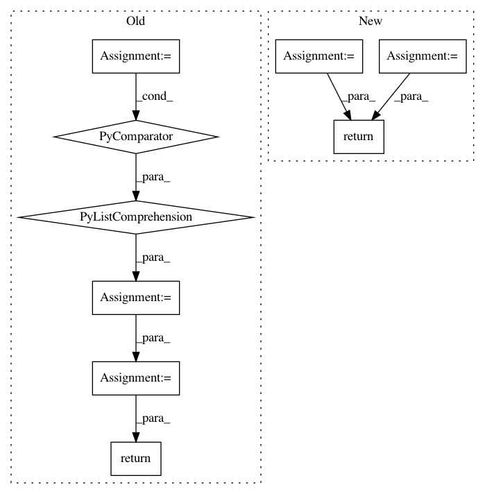

685126644ae540be72eb662527269a0395e2c9eb,onmt/IO.py,,make_features,#Any#Any#,59
Before Change
def make_features(batch, fields):
// TODO: This is bit hacky, add to batch somehow.
f = ONMTDataset.collect_features(fields)
cat = [batch.src[0]] + [batch.__dict__[k] for k in f]
cat = [c.unsqueeze(2) for c in cat]
return torch.cat(cat, 2)
def join_dicts(*args):
After Change
assert side in ["src", "tgt"]
if isinstance(batch.__dict__[side], tuple):
data = batch.__dict__[side][0]
else:
data = batch.__dict__[side]
feat_start = side + "_feat_"
features = sorted(batch.__dict__[k]
for k in batch.__dict__ if feat_start in k)
levels = [data] + features
return torch.cat([level.unsqueeze(2) for level in levels], 2)
def join_dicts(*args):
In pattern: SUPERPATTERN
Frequency: 4
Non-data size: 9
Instances
Project Name: OpenNMT/OpenNMT-py
Commit Name: 685126644ae540be72eb662527269a0395e2c9eb
Time: 2017-09-05
Author: bpeters@coli.uni-saarland.de
File Name: onmt/IO.py
Class Name:
Method Name: make_features
Project Name: aleju/imgaug
Commit Name: 2a1bd4c93a998d16516d82893401b346d66a95e9
Time: 2019-07-19
Author: kontakt@ajung.name
File Name: imgaug/dtypes.py
Class Name:
Method Name: get_minimal_dtype
Project Name: keras-team/keras
Commit Name: 55447cbb3d33c2c209fdad8a1d53a166bc39544e
Time: 2016-08-09
Author: farizrahman4u@gmail.com
File Name: keras/backend/theano_backend.py
Class Name:
Method Name: squeeze
Project Name: NifTK/NiftyNet
Commit Name: 135a56e0935fbb04811f8ce7b9f514f498212f71
Time: 2018-07-25
Author: wenqi.li@ucl.ac.uk
File Name: niftynet/layer/crf.py
Class Name:
Method Name: ftheta